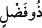
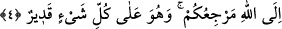

yazılır; kim de bir kötülük yaparsa ona bir kötülük yazılır. O kimse bu kötülüğün
cezâsını dünyada çekmezse, o on iyiliğinden biri bu kötülüğe karşılık olarak alınır ve
böylece dokuz iyiliği kalmış olur.”
Cürcânî şöyle der: Âyetteki “
(lütuf sâhibi)” o kimsedir ki ezel dîvânında onun
adına lütuf nişanı yazmışlardır. Elbette o kimse ölümünden sonra o şerefe ulaşmak ister.
O nesneyi ki verirler geri almazlar
“Eğer yüz çevirirseniz” size teklif edilen tevhid, istiğfâr ve tevbeden kaçınır, yüz
çevirmeye devam ederseniz “ben sizin için” şefkatim ve acıma hislerim gereği
“büyük” meşakkatli “bir günün” kıyamet gününün “azâbından korkarım.” “Korkarım”
kelimesi “beklerim” mânâsında da olabilir. Âyette azaptan önce mükâfâtın belirtilmesi,
Allah’ın rahmetinin gazabından önce olduğunu ifade eder.
et-Tibyân’da şöyle der: “Kıyamet, kendisinde olacak çok dehşetli şeylerden dolayı
büyüktür. Kıyâmet böylece kendisinde gerçekleşecek şeylerin özelliği ile tavsif
edilmiştir.”
4. Dönüşünüz Allah’adır. O, her şeyi yapacak güçtedir.
Ölerek sonra da yine böyle bir günde yaptıklarının karşılığını görmek için diriltilerek
“dönüşünüz Allah’adır.” başkasına değil. “O, her şeyi yapacak güçtedir.” size azâb
etmeye de kadirdir. Çünkü O’nun gücünün yettiği şeylerden biri de azâb etme ve sevab
vermedir.
Bilesin ki bu âyet, tevhidin üstünlüğüne ve istiğfarın şerefine delâlet etmektedir.
Görüldüğü gibi muvahhid olan ve istiğfâr eden kimse nasıl dünyada güzel bir hayâta,
âhirette ise yüksek derecelere nâil olmaktadır. Öyleyse bu ikisi, iki cihân saadetinin
anahtarıdır.
Bir hadiste: “Lâ ilâhe İllâllah, cennetin ücretidir.”[90] başka bir habere göre de
“cennetin anahtarıdır.”[91] buyrulmuştur.
Bir haberde de şöyle geçer:
“Âdem: “Yâ Rabbi” der, İblis’i başıma musallat ettin. Ondan ancak senin sâyende
kurtulabilirim.”
Allah Teâlâ şöyle buyurur:
“Senin doğacak her çocuğun için İblis’in ve kötü yandaşlarının tuzaklarından
koruyacak bir koruyucu tayin ettim.”
Âdem: “Ya Rabbi” der biraz daha artır.
Bunun üzerine Allah Teâlâ: